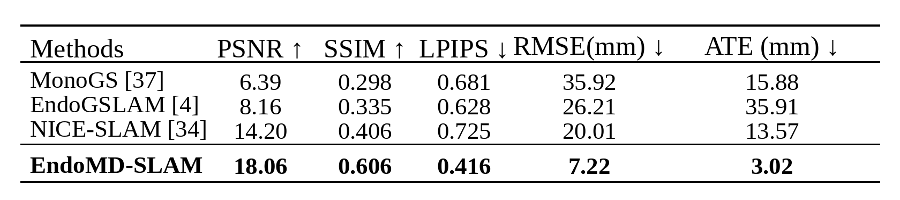
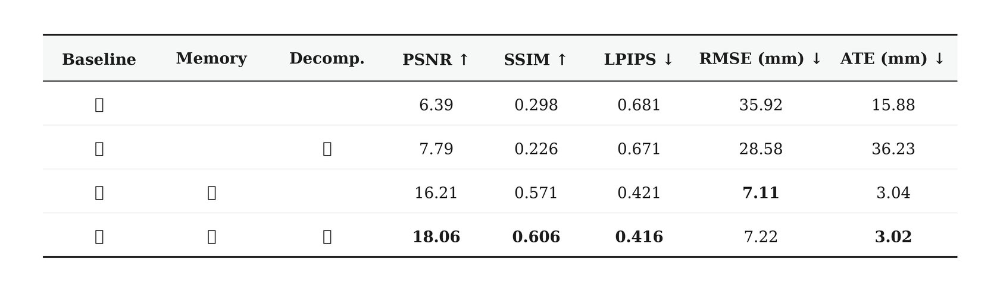

EndoMD-SLAM: Endoscopic Gaussian Splatting SLAM under Optical Degradation
Memory and Static-Transient Decomposition for robust online endoscopic reconstruction and tracking.

Project video for EndoMD-SLAM under degraded endoscopic observations.
Abstract
Dense 3D reconstruction is critical for clinical endoscopic navigation and documentation. While Gaussian Splatting SLAM systems show promise in this domain, they fundamentally rely on strict multi-view photometric consistency. In routine procedures, this assumption is severely violated by intermittent optical degradations like moving debris and water flushing. Standard systems erroneously fuse these camera-attached artifacts into the persistent 3D geometry, causing severe tracking drift and irreversible map corruption. To address this limitation, we propose EndoMD-SLAM, a framework designed to maintain stability under optical degradation through specialized tracking and mapping mechanisms. On the tracking side, a memory-driven gating mechanism detects unreliable observations to suspend map updates and utilizes historical keyframes for drift-aware relocalization. On the mapping side, a self-supervised static-transient decomposition isolates visual contaminants into a dedicated transient field. This explicit separation prevents artifacts from structurally entangling with the persistent anatomical map. We curate a degradation-focused benchmark from colonoscopy videos to systematically evaluate these failure modes. Extensive experiments show that while standard baselines fail under severe optical degradation, EndoMD-SLAM preserves geometric integrity, reducing absolute trajectory error by 91% and improving rendering fidelity by 9.9 dB PSNR.
Interactive 3D Demo
Explore Ours colored point cloud reconstructions across multiple C3VDv2 sequences. For web visualization, the reconstructed Gaussian splats are converted into colored point clouds. Drag to rotate, scroll to zoom.
Methodology

Results
EndoMD-SLAM is evaluated on a degradation-focused C3VDv2 benchmark containing sequences tagged with water and debris on lens.


Qualitative Analysis